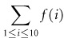

|
|
|
|
6.6 Recursion
Unlike the control-flow mechanisms discussed so far,
recursion requires no special syntax. In any language that provides subroutines
(particularly functions), all that is required
is to permit functions to call themselves, or to call other functions that then
call them back in turn. Most programmers learn in a data structures class that
recursion and (logically controlled) iteration provide equally powerful means
of computing functions: any iterative algorithm can be rewritten,
automatically, as a recursive algorithm, and vice versa. We will compare
iteration and recursion in more detail in the first subsection below. In the
following subsection we will consider the possibility of passing unevaluated
expressions into a function. While usually inadvisable, due to implementation
cost, this technique will sometimes allow us to write elegant code for
functions that are only defined on a subset of the possible inputs, or that
explore logically infinite data structures.
Example 6.76: A
"naturally iterative" problem
|
|
As we noted in Section 3.2, Fortran 77 and certain other languages do not
permit recursion. A few functional languages do not permit iteration. Most
modern languages, however, provide both mechanisms. Iteration is in some sense
the more "natural" of the two in imperative languages, because it is
based on the repeated modification of variables. Recursion is the more natural
of the two in functional languages, because it does not change
variables. In the final analysis, which to use in which circumstance is mainly
a matter of taste. To compute a sum,

it seems natural to use iteration. In C one would say:
typedef
int (*int_func) (int);
int
summation(int_func f, int low, int high) {
/* assume low <= high */
int total = 0;
int i;
for (i = low; i <= high;
i++) {
total += f(i);
}
return total;
}
|
|
Example 6.77: A
"naturally recursive" problem
|
|
To compute a value defined by a recurrence,
recursion may seem more natural:
int
gcd(int a, int b) {
/* assume a, b > 0
*/
if (a == b) return a;
else if (a > b)
return gcd(a-b, b);
else return gcd(a,
b-a);
}
|
|
Example 6.78: Implementing
problems "the other way"
|
|
In both these cases, the choice could go the other way:
typedef
int (*int_func) (int);
int
summation(int_func f, int low, int high) {
/* assume low <= high */
if (low == high) return
f(low);
else return f(low) +
summation(f, low+1, high);
}
int
gcd(int a, int b) {
/* assume a, b > 0 */
while (a != b) {
if
(a > b) a = a-b;
else
b = b-a;
}
return a;
}
|
|
Example 6.79: Iterative
implementation of tail recursion
|
|
It is sometimes argued that iteration is more efficient than
recursion. It is more accurate to say that naive implementation of
iteration is usually more efficient than naive implementation of recursion. In
the examples above, the iterative implementations of summation and greatest
divisors will be more efficient than the recursive implementations if the
latter make real subroutine calls that allocate space on a run-time stack for
local variables and bookkeeping information. An "optimizing"
compiler, however, particularly one designed for a functional language, will
often be able to generate excellent code for recursive functions. It is
particularly likely to do so for tail-recursive functions such as gcd above. A tail-recursive function is one in which additional
computation never follows a recursive call: the return value is simply whatever
the recursive call returns. For such functions, dynamically allocated stack
space is unnecessary: the compiler can reuse the space belonging to the
current iteration when it makes the recursive call. In effect, a good compiler
will recast the recursive gcd function above as follows.
int
gcd(int a, int b) {
/* assume a, b > 0
*/
start:
if (a == b) return a;
else if (a > b) {
a =
a-b; goto start;
} else {
b =
b-a; goto start;
}
}
|
|
Even for functions that are not tail-recursive, automatic,
often simple transformations can produce tail-recursive code. The general case
of the transformation employs conversion to what is known as continuation-passing
style [FWH01, Chaps. 7�C8]. In effect, a recursive function can
always avoid doing any work after returning from a recursive call by passing
that work into the recursive call, in the form of a continuation.
Example 6.80: By-hand
creation of tail-recursive code
|
|
Some specific transformations (not based on continuation
passing) are often employed by skilled users of functional languages. Consider,
for example, the recursive summation function above, written here in Scheme:
(define
summation (lambda (f low high)
(if (= low high)
(f low)
; then part
(+ (f low)
(summation f (+ low 1) high)))))
; else part
Recall that Scheme, like all Lisp dialects, uses Cambridge
Polish notation for expressions. The lambda keyword is used to introduce a function. As recursive calls
return, our code calculates the sum from "right to left": from high down to low. If the programmer (or compiler) recognizes that addition
is associative, we can rewrite the code in a tail-recursive form:
(define
summation (lambda (f low high subtotal)
(if (= low high)
(+ subtotal (f
low))
(summation f (+
low 1) high (+ subtotal (f low))))))
Here the subtotal parameter accumulates the sum from left to right, passing
it into the recursive calls. Because it is tail recursive, this function can be
translated into machine code that does not allocate stack space for recursive
calls. Of course, the programmer won't want to pass an explicit subtotal parameter to the initial call, so we hide it (the
parameter) in an auxiliary, "helper" function:
(define
summation (lambda (f low high)
(letrec ((sum-helper (lambda (low
subtotal)
(let ((new_subtotal (+ subtotal (f low))))
(if (= low
high)
new_subtotal
(sum-helper (+ low 1) new_subtotal))))))
(sum-helper low 0))))
The let
construct in Scheme serves to introduce a nested scope in which local names
(e.g., new_subtotal) can be defined. The letrec construct permits the definition of recursive functions
(e.g., sum-helper).
|
|
Example 6.81: Naive
recursive Fibonacci function
|
|
Detractors of functional programming sometimes argue,
incorrectly, that recursion leads to algorithmically inferior programs.
Fibonacci numbers, for example, are defined by the mathematical recurrence
The naive way to implement this recurrence in Scheme is
(define fib (lambda (n)
(cond ((= n 0) 1)
((= n 1) 1)
(#t (+ (fib (- n 1)) (fib (- n 2)))))))
; #t means 'true' in Scheme
|
|
Example 6.82: Linear
iterative Fibonacci function
|
|
Unfortunately, this algorithm takes exponential time, when
linear time is possible. [8] In
C, one might write
int
fib(int n) {
int f1 = 1; int f2 = 1;
int i;
for (i = 2; i <= n; i++)
{
int temp = f1 + f2;
f1 = f2; f2 = temp;
}
return f2;
}
|
|
Example 6.83: Efficient
tail-recursive Fibonacci function
|
|
One can write this iterative algorithm in Scheme: Scheme
includes (nonfunctional) iterative features. It is probably better, however, to
draw inspiration from the tail-recursive version of the summation example
above, and write the following O(n) recursive function:
(define
fib (lambda (n)
(letrec ((fib-helper (lambda (f1 f2 i)
(if (= i n)
f2
(fib-helper f2 (+ f1 f2) (+ i 1))))))
(fib-helper 0 1
0))))
For a programmer accustomed to writing in a functional
style, this code is perfectly natural. One might argue that it isn't
"really" recursive; it simply casts an iterative algorithm in a
tail-recursive form, and this argument has some merit. Despite the algorithmic
similarity, however, there is an important difference between the iterative
algorithm in C and the tail-recursive algorithm in Scheme: the latter has no
side effects. Each recursive call of the fib-helper function creates a new scope, containing new variables. The
language implementation may be able to reuse the space occupied by previous
instances of the same scope, but it guarantees that this optimization will
never introduce bugs.
|
|
6.6.2 Applicative- and Normal-Order Evaluation
Throughout the discussion so far we have assumed implicitly
that arguments are evaluated before passing them to a subroutine. This need not
be the case. It is possible to pass a representation of the unevaluated
arguments to the subroutine instead, and to evaluate them only when (if) the
value is actually needed. The former option (evaluating before the call) is
known as applicative-order evaluation; the latter (evaluating only when
the value is actually needed) is known as normal-order evaluation.
Normal-order evaluation is what naturally occurs in macros (Section 3.7). It also occurs in short-circuit Boolean
evaluation (Section 6.1.5), call-by-name parameters (to be discussed
in Section 8.3.1), and certain functional languages (to be
discussed in Section 10.4).
Algol 60 uses normal-order evaluation by default for user-defined
functions (applicative order is also available). This choice was presumably
made to mimic the behavior of macros (Section 3.7). Most programmers in 1960 wrote mainly in
assembler, and were accustomed to macro facilities. Because the
parameter-passing mechanisms of Algol 60 are part of the language, rather than
textual abbreviations, problems like misinterpreted precedence or naming
conflicts do not arise. Side effects, however, are still very much an issue. We
will discuss Algol 60 parameters in more detail in Section 8.3.1.
From the points of view of clarity and efficiency,
applicative-order evaluation is generally preferable to normal-order
evaluation. It is therefore natural for it to be employed in most languages. In
some circumstances, however, normal-order evaluation can actually lead to
faster code, or to code that works when applicative-order evaluation would lead
to a run-time error. In both cases, what matters is that normal-order
evaluation will sometimes not evaluate an argument at all, if its value is
never actually needed. Scheme provides for optional normal-order evaluation in
the form of built-in functions called delay and force.
[9]
These
functions provide an implementation of lazy evaluation. In the absence
of side effects, lazy evaluation has the same semantics as normal-order
evaluation, but the implementation keeps track of which expressions have
already been evaluated, so it can reuse their values if they are needed more
than once in a given referencing environment.
A delayed
expression is sometimes called a promise. The mechanism used to keep
track of which promises have already been evaluated is sometimes called memoization.
[10]
Because applicative-order evaluation is the default in Scheme, the programmer
must use special syntax not only to pass an unevaluated argument, but also to
use it. In Algol 60, subroutine headers indicate which arguments are to be
passed which way; the point of call and the uses of parameters within
subroutines look the same in either case.
Example 6.84: Lazy
evaluation of an infinite data structure
|
|
A common use of lazy evaluation is to create so-called infinite
or lazy data structures that are "fleshed out" on
demand. The following example, adapted from version 5 of the Scheme manual [ADH+98, p. 28], creates a "list" of
all the natural numbers:
(define
naturals
(letrec ((next (lambda (n) (cons n
(delay (next (+ n 1)))))))
(next 1)))
(define
head car)
(define
tail (lambda (stream) (force (cdr stream))))
Here cons
can be thought of, roughly, as a concatenation operator. Car returns the head of a list; cdr returns everything but the head. Given these definitions,
we can access as many natural numbers as we want, as shown in the following on
the next page.
Design & Implementation
Normal-order evaluation
Normal-order evaluation is one of many examples we have seen
where arguably desirable semantics have been dismissed by language designers
because of fear of implementation cost. Other examples in this chapter include
side-effect freedom (which allows normal order to be implemented via lazy
evaluation), iterators (Section 6.5.3), and nondeterminacy (Section 6.7). As noted in the sidebar on page 236, however, there has been a tendency over time to
trade a bit of speed for cleaner semantics and increased reliability. Within
the functional programming community, Miranda and its successor Haskell are
entirely side-effect free, and use normal order (lazy) evaluation for all
parameters.
|
|
(head
naturals)
⇒
1
(head
(tail naturals))
⇒
2
(head
(tail (tail naturals))) ⇒
3
The list will occupy only as much space as we have actually
explored. More elaborate lazy data structures (e.g., trees) can be valuable in
combinatorial search problems, in which a clever algorithm may explore only the
"interesting" parts of a potentially enormous search space.
|
|
[8]Actually, one can do substantially better than linear time
using algorithms based on binary matrix multiplication or closest-integer
rounding of continuous functions, but these approaches suffer from high
constant-factor costs or problems with numeric precision. For most purposes the
linear-time algorithm is a reasonable choice.
[9]More precisely, delay is a special form, rather
than a function. Its argument is passed to it unevaluated.
[10]Within the functional programming community, the term
"lazy evaluation" is often used for any implementation that declines
to evaluate unneeded function parameters; this includes both naive
implementations of normal-order evaluation and the memoizing mechanism
described here.